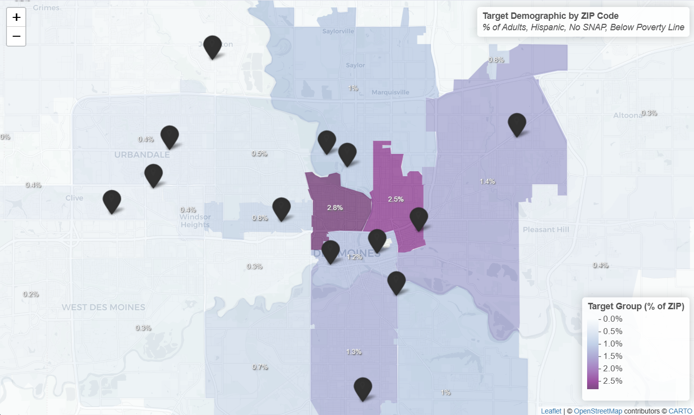

Hi, I'm Oliver Williams! I am a graphic designer and data analyst with expertise in combining design thinking and technical skills to solve complex problems. I specialize in data-driven visualizations and corporate branding using the Adobe Suite, working with clients to craft the best results possible.
Leveraging R and geospatial analysis (leaflet) to uncover service gaps in the DMARC Food Pantry Network. By merging transaction logs with ACS Census data, I mapped visitor density to identify high-need areas and utilized predictive modeling to forecast a 2025 surge in demand within specific demographic groups.

The story behind how I created this website. I used both HTML5 and Tailwind CSS to build this site's aesthetic and established a CI/CD pipeline via GitHub and Cloudflare for updates on my laptop.
Looking for assistance with a project? Please reach out and let me know how I can help.
Email Me